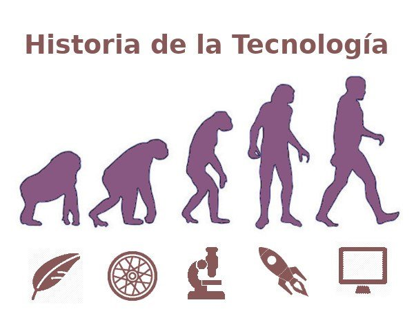

Por historia de la tecnología se entiende el recuento histórico del desarrollo por parte del ser humano de herramientas y técnicas que le han permitido atender propósitos prácticos. Gracias a ellas ha podido transformar el mundo a su alrededor para hacerse la vida más sencilla.
En gran medida se trata de un segmento importante de la historia misma de la humanidad, ya que la aplicación de los saberes científicos y el impacto de éstos en la sociedad poseen la capacidad de alterar radicalmente la vida humana.
¿Como inicio la técnologia?
La tecnología no tiene una fecha de nacimiento como tal, es decir, no podemos decir que a partir de un año específico se haya creado o inventado. Parece ser algo que existe desde los inicios de nuestra especie. De hecho, sirve para distinguir a la humanidad de otras especies de homínidos.
La conquista del fuego, el uso de herramientas líticas (de piedra) y la creación de un lenguaje articulado y simbólico son formas de tecnología que denotan la cercanía con nuestra especie y que, al día de hoy, son exclusivas de la humanidad entre todos los animales del mundo.
¿Como ha evolucionado la técnologia?
La evolución tecnológica tiene muchas consecuencias en el día a día, que pueden ir hacia el mejoramiento de nuestra vida cotidiana (menos esfuerzo, menos sufrimiento, satisfacción de ciertos deseos) o también en su detrimento (nuevas formas de opresión, nuevas formas de guerra, nuevas enfermedades).
La tecnología es completamente amoral y dependiendo de cómo la usemos, podremos generar cambios positivos y equilibrados, o podemos lanzar el mundo de cabeza a la ruina.